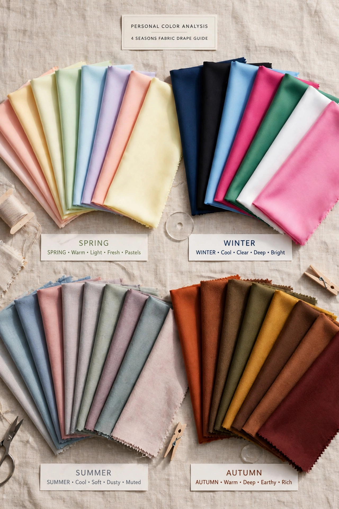

骨格ストレート×イエベ春は、ハリのある形に明るい色が重なる、華やかで元気な組み合わせです。ところが場面によっては、その華やかさが「少し強い」と感じることがあります。タイプが間違っているのではありません。掛け合わせには、調整の余地があるのです。
イエベ春の色は明るく澄んでいるのが特徴です。強く感じる日の調整は、色のグループを変えるのではなく、同じグループの中で一段落ち着いた色に寄せるのが基本です。コーラルピンクをピーチに、鮮やかなグリーンを若草色に。範囲の中での移動なら、似合う土台は崩れません。
ストレートのハリのあるシルエットは、それ自体が存在感です。華やかさを抑えたい日は、形の主張を一点に絞ります。ジャケットで形を作るなら中はシンプルに、ワンピースで見せるなら小物は静かに。形と色の両方が主張すると、掛け合わせの印象は必要以上に大きくなります。
診断の結果は「この組み合わせしか着てはいけない」という決まりではありません。自分の標準位置が分かっているからこそ、場面に合わせて強めたり弱めたりできる。この調整の自由こそが、タイプを知ることの実用的な価値です。